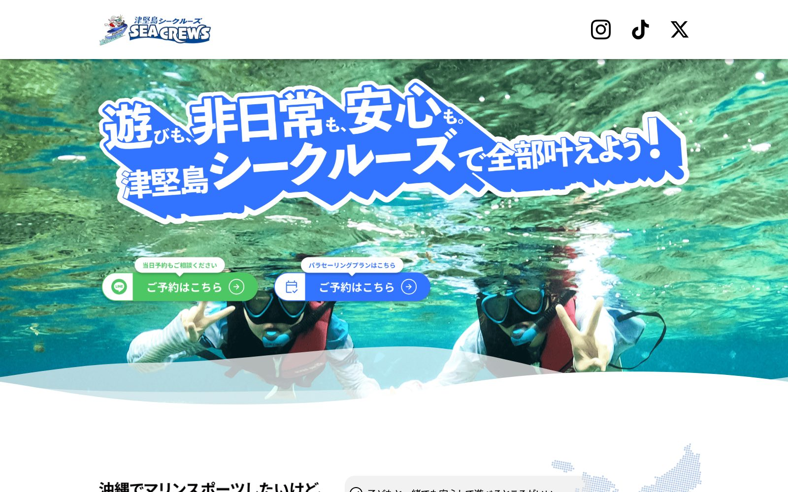
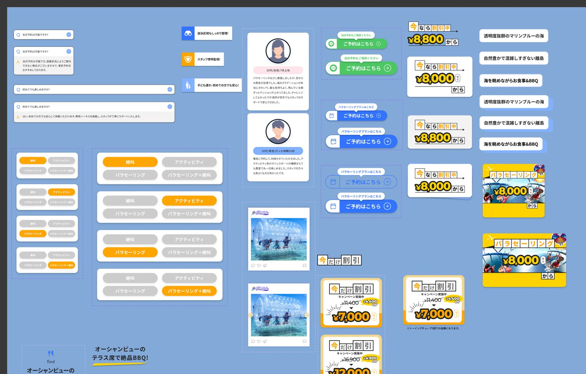
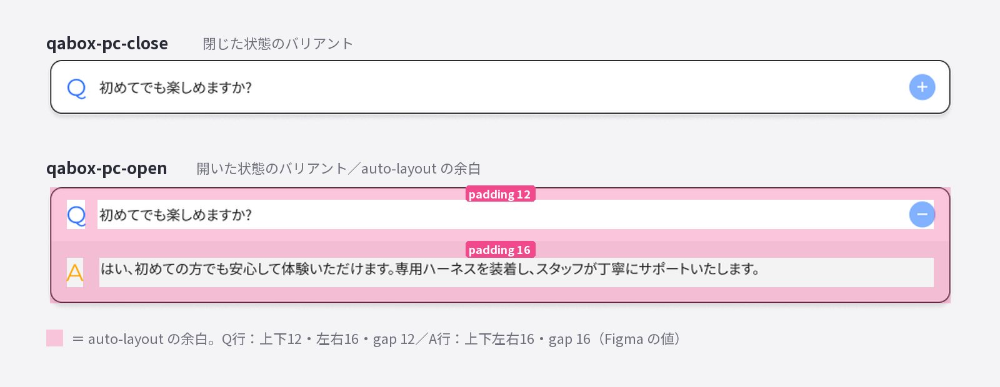
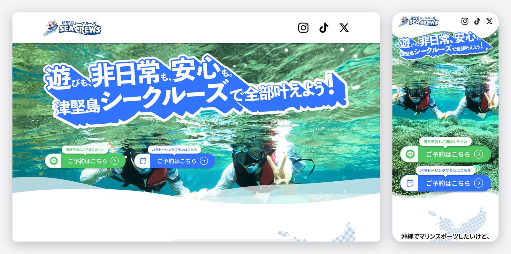
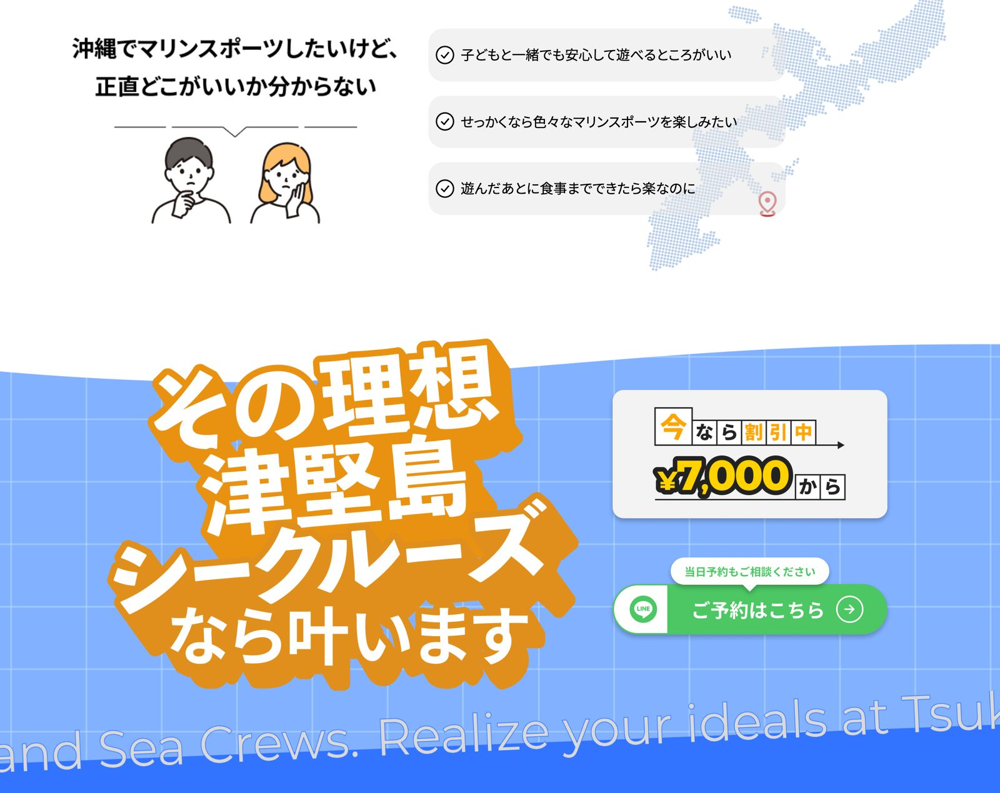

Works — LP Design（実案件）
津堅島シークルーズマリンアクティビティLP
沖縄・津堅島のマリンアクティビティ「津堅島シークルーズ」のランディングページ。デザインとディレクション、原稿・写真素材の用意までを担当し、実装はコーダーへ受け渡す体制で制作しました。


Purpose制作の目的
沖縄県うるま市・津堅島でパラセーリングやボートシュノーケリングを提供する「津堅島シークルーズ」の予約獲得を目的としたランディングページです。沖縄旅行を計画する家族連れを主なターゲットに、「子どもと一緒でも安心して遊びたい」「いろいろなマリンスポーツを楽しみたい」「遊んだあとの食事まで済ませたい」という3つの悩みに順番に答えていく構成で、LINE予約とパラセーリング予約サイトの2つのコンバージョンへ導きます。
本案件の担当はデザイン・ディレクション・原稿・写真素材の用意まで。実装は別のコーダーが行うため、デザインの意図が正確に伝わるデータづくりと受け渡しを含めて進行しました。


Tone & Visualトーンとビジュアルの設計
最大の商品は「海そのもの」だと考え、ファーストビューは海中の実写写真を全面に使いました。透明度の高い海と子どもの笑顔が一枚で伝わるカットに、白フチの筆致風レタリングでキャッチコピーを重ね、旅行先で味わう非日常の高揚感を演出しています。

全体は海のブルーを基調に、ページを案内するキャラクターイラストを併用。「実写＝海の魅力と透明度の証拠」「イラスト＝親しみやすさと安心感」と役割を分担させることで、家族連れが構えずに読み進められるトーンにまとめました。CTAはLINE予約をグリーン、予約サイトをブルーと行き先ごとに色を分け、迷わず選べるようにしています。
Copy & Materials原稿・素材の工夫
キャッチコピー「遊びも、非日常も、安心も、津堅島シークルーズで全部叶えよう！」は、ターゲットの3つの悩みをそのまま裏返した設計です。本文も「悩みの列挙→津堅島シークルーズなら叶う」という受け答えの流れで書き、読み進めるほど自分ごと化する原稿を目指しました。

写真素材は現地の写真から透明度と楽しさが伝わるカットを選定・調整して使用。料金や当日予約の相談可否といった、予約前の不安を解消する情報もあわせて原稿に織り込んでいます。
この作品の制作意図や工夫について、詳しくお話しできます。お気軽にご連絡ください。
お問い合わせ